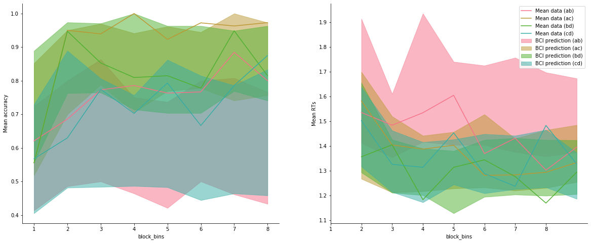
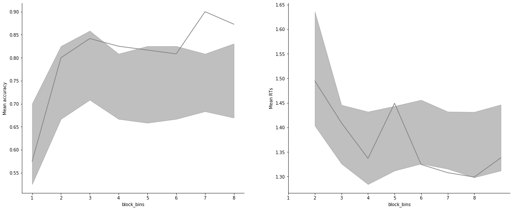

[1]:
import rlssm
import pandas as pd
import os
/Users/Khamir/opt/anaconda3/lib/python3.7/site-packages/statsmodels/tools/_testing.py:19: FutureWarning: pandas.util.testing is deprecated. Use the functions in the public API at pandas.testing instead.
import pandas.util.testing as tm
[2]:
par_path = os.path.abspath(os.path.join(os.getcwd(), os.pardir))
data_path = os.path.join(par_path, 'data/data_experiment.csv')
data = pd.read_csv(data_path, index_col=0)
data = data[data.participant < 5].reset_index(drop=True)
data['block_label'] += 1
data
INFO:numexpr.utils:NumExpr defaulting to 4 threads.
[2]:
| participant | block_label | trial_block | f_cor | f_inc | cor_option | inc_option | times_seen | rt | accuracy | |
|---|---|---|---|---|---|---|---|---|---|---|
| 0 | 1 | 1.0 | 1.0 | 43.0 | 39.0 | 2 | 1 | 1.0 | 1.244082 | 0.0 |
| 1 | 1 | 1.0 | 2.0 | 60.0 | 50.0 | 4 | 3 | 1.0 | 1.101821 | 1.0 |
| 2 | 1 | 1.0 | 3.0 | 44.0 | 36.0 | 4 | 2 | 2.0 | 1.029923 | 0.0 |
| 3 | 1 | 1.0 | 4.0 | 55.0 | 55.0 | 4 | 3 | 2.5 | 1.368007 | 0.0 |
| 4 | 1 | 1.0 | 5.0 | 52.0 | 49.0 | 4 | 3 | 3.5 | 1.039329 | 1.0 |
| ... | ... | ... | ... | ... | ... | ... | ... | ... | ... | ... |
| 953 | 4 | 3.0 | 75.0 | 51.0 | 44.0 | 3 | 1 | 37.0 | 1.396425 | 1.0 |
| 954 | 4 | 3.0 | 76.0 | 57.0 | 33.0 | 3 | 1 | 38.0 | 1.208049 | 1.0 |
| 955 | 4 | 3.0 | 77.0 | 42.0 | 30.0 | 3 | 1 | 39.0 | 1.276406 | 1.0 |
| 956 | 4 | 3.0 | 78.0 | 41.0 | 42.0 | 2 | 1 | 38.5 | 1.530143 | 0.0 |
| 957 | 4 | 3.0 | 79.0 | 46.0 | 36.0 | 4 | 2 | 39.5 | 1.269675 | 1.0 |
958 rows × 10 columns
[3]:
model = rlssm.RLRDModel_2A(2,
separate_learning_rates=False,
nonlinear_mapping=True)
Using cached StanModel
[4]:
model.family, model.model_label, model.hierarchical_levels
[4]:
('RLRDM_2A', 'hierRLRDM_2A_nonlin', 2)
Fit¶
[5]:
# sampling parameters
n_iter = 700
n_chains = 2
n_thin = 5
# learning parameters
K = 4 # n options
initial_value_learning = 17.5 # intitial value (Q0)
# bayesian model
alpha_priors = None
drift_scaling_priors = None
threshold_priors = None
ndt_priors = None
[6]:
model_fit = model.fit(
data,
K,
initial_value_learning,
alpha_priors=alpha_priors,
drift_scaling_priors=drift_scaling_priors,
threshold_priors=threshold_priors,
ndt_priors=ndt_priors,
thin = n_thin,
iter = n_iter,
chains = n_chains,
print_diagnostics = False)
WARNING:pystan:Maximum (flat) parameter count (1000) exceeded: skipping diagnostic tests for n_eff and Rhat.
To run all diagnostics call pystan.check_hmc_diagnostics(fit)
WARNING:pystan:6 of 140 iterations saturated the maximum tree depth of 10 (4.29 %)
WARNING:pystan:Run again with max_treedepth larger than 10 to avoid saturation
Get Rhat¶
[7]:
model_fit.rhat.describe()
[7]:
| rhat | |
|---|---|
| count | 30.000000 |
| mean | 0.996339 |
| std | 0.008527 |
| min | 0.985726 |
| 25% | 0.990013 |
| 50% | 0.993930 |
| 75% | 1.001776 |
| max | 1.019313 |
[8]:
model_fit.rhat.head()
[8]:
| rhat | variable | |
|---|---|---|
| 0 | 0.986208 | mu_alpha |
| 1 | 0.991597 | mu_drift_scaling |
| 2 | 1.000868 | mu_threshold |
| 3 | 0.995581 | mu_ndt |
| 4 | 1.013531 | mu_utility |
Calculate wAIC¶
[9]:
model_fit.waic
[9]:
{'lppd': -636.7474790816682,
'p_waic': 16.90342370150998,
'waic': 1307.3018055663563,
'waic_se': 70.24783871280151}
Check divergences¶
[ ]:
Get posteriors¶
[10]:
model_fit.samples
[10]:
| chain | draw | transf_mu_alpha | transf_mu_drift_scaling | transf_mu_threshold | transf_mu_ndt | transf_mu_utility | alpha_sbj[1] | alpha_sbj[2] | alpha_sbj[3] | ... | threshold_sbj[3] | threshold_sbj[4] | ndt_sbj[1] | ndt_sbj[2] | ndt_sbj[3] | ndt_sbj[4] | utility_sbj[1] | utility_sbj[2] | utility_sbj[3] | utility_sbj[4] | |
|---|---|---|---|---|---|---|---|---|---|---|---|---|---|---|---|---|---|---|---|---|---|
| 0 | 0 | 50 | 0.389852 | 0.260160 | 2.039531 | 0.518704 | 0.753350 | 0.390858 | 0.389355 | 0.390347 | ... | 2.040915 | 2.045270 | 0.634728 | 0.512488 | 0.656117 | 0.538625 | 1.256124 | 0.918817 | 0.856491 | 1.205676 |
| 1 | 0 | 69 | 0.378911 | 1.042213 | 2.033924 | 0.599594 | 0.759297 | 0.361105 | 0.421789 | 0.343681 | ... | 1.790210 | 1.858753 | 0.651402 | 0.500500 | 0.731477 | 0.581033 | 0.967012 | 0.902121 | 1.044809 | 1.436584 |
| 2 | 0 | 40 | 0.311286 | 0.359719 | 2.121365 | 0.662708 | 0.771157 | 0.359156 | 0.309522 | 0.293742 | ... | 1.994239 | 2.246957 | 0.623216 | 0.478927 | 0.681141 | 0.463616 | 1.011315 | 0.826011 | 1.019075 | 0.979705 |
| 3 | 0 | 36 | 0.428026 | 0.375515 | 2.042162 | 0.693415 | 0.743478 | 0.453410 | 0.437741 | 0.410872 | ... | 2.029960 | 1.932889 | 0.646773 | 0.471962 | 0.695010 | 0.589258 | 1.040701 | 0.777189 | 0.842588 | 1.143177 |
| 4 | 0 | 43 | 0.471770 | 0.412414 | 1.745501 | 0.781577 | 0.731422 | 0.460706 | 0.466056 | 0.405737 | ... | 1.791250 | 1.787013 | 0.689526 | 0.518718 | 0.715150 | 0.558558 | 1.143534 | 0.962973 | 1.310077 | 1.438506 |
| ... | ... | ... | ... | ... | ... | ... | ... | ... | ... | ... | ... | ... | ... | ... | ... | ... | ... | ... | ... | ... | ... |
| 135 | 1 | 67 | 0.447038 | 0.037123 | 1.859508 | 0.632910 | 0.633219 | 0.426436 | 0.462904 | 0.449477 | ... | 1.949283 | 1.850434 | 0.651579 | 0.509614 | 0.668039 | 0.597291 | 1.211902 | 0.917889 | 0.987711 | 1.344848 |
| 136 | 1 | 6 | 0.318963 | 0.322184 | 2.081917 | 0.555518 | 0.705832 | 0.305661 | 0.300676 | 0.318861 | ... | 2.393156 | 2.038960 | 0.617370 | 0.531695 | 0.622287 | 0.537093 | 1.320308 | 0.675256 | 1.007719 | 0.997236 |
| 137 | 1 | 48 | 0.355252 | 0.036776 | 1.999489 | 0.397209 | 0.752053 | 0.422098 | 0.388839 | 0.339592 | ... | 2.118468 | 1.852761 | 0.674153 | 0.462093 | 0.688119 | 0.573310 | 1.135217 | 0.850588 | 0.986952 | 1.220671 |
| 138 | 1 | 69 | 0.377256 | 0.129950 | 1.906255 | 0.747724 | 0.701371 | 0.347866 | 0.373361 | 0.383578 | ... | 1.876404 | 2.003985 | 0.665424 | 0.506288 | 0.740041 | 0.460355 | 1.153079 | 0.854669 | 1.256344 | 1.202597 |
| 139 | 1 | 34 | 0.334592 | 0.097601 | 2.128036 | 0.517142 | 0.685202 | 0.338138 | 0.337327 | 0.342379 | ... | 2.270441 | 2.196691 | 0.626388 | 0.483143 | 0.637548 | 0.452060 | 1.281266 | 0.927838 | 0.823286 | 0.799116 |
140 rows × 27 columns
[11]:
model_fit.trial_samples
[11]:
OrderedDict([('drift_cor_t',
array([[0.6162303 , 0.6162303 , 1.71333622, ..., 2.12695479, 1.4981428 ,
2.2294748 ],
[0.87421797, 0.87421797, 1.8420916 , ..., 1.9211247 , 1.27157689,
2.00492766],
[0.80287771, 0.80287771, 1.74540057, ..., 1.98639803, 1.49103399,
2.07761211],
...,
[0.65461078, 0.65461078, 1.73304217, ..., 1.84822063, 1.29167386,
1.96085508],
[0.61501688, 0.61501688, 1.46183274, ..., 1.90201065, 1.34021836,
1.99647951],
[0.56703399, 0.56703399, 1.45593663, ..., 1.91003572, 1.51158564,
1.98117622]])),
('drift_inc_t',
array([[0.6162303 , 0.6162303 , 0.75830353, ..., 0.54957344, 0.6864156 ,
0.7262541 ],
[0.87421797, 0.87421797, 1.01411402, ..., 0.35629109, 0.45523124,
0.51695977],
[0.80287771, 0.80287771, 0.93698477, ..., 0.68771322, 0.83374569,
0.84640758],
...,
[0.65461078, 0.65461078, 0.80052298, ..., 0.50288709, 0.64348642,
0.64570093],
[0.61501688, 0.61501688, 0.72969102, ..., 0.49742818, 0.6225076 ,
0.65398646],
[0.56703399, 0.56703399, 0.68228693, ..., 0.80382017, 0.94042941,
0.9522951 ]])),
('threshold_t',
array([[2.02853765, 2.02853765, 2.02853765, ..., 2.04527023, 2.04527023,
2.04527023],
[2.03384487, 2.03384487, 2.03384487, ..., 1.85875325, 1.85875325,
1.85875325],
[2.09439733, 2.09439733, 2.09439733, ..., 2.24695722, 2.24695722,
2.24695722],
...,
[1.9120656 , 1.9120656 , 1.9120656 , ..., 1.85276102, 1.85276102,
1.85276102],
[1.8836856 , 1.8836856 , 1.8836856 , ..., 2.00398486, 2.00398486,
2.00398486],
[2.08510253, 2.08510253, 2.08510253, ..., 2.19669112, 2.19669112,
2.19669112]])),
('ndt_t',
array([[0.63472754, 0.63472754, 0.63472754, ..., 0.53862534, 0.53862534,
0.53862534],
[0.65140247, 0.65140247, 0.65140247, ..., 0.58103292, 0.58103292,
0.58103292],
[0.62321593, 0.62321593, 0.62321593, ..., 0.46361565, 0.46361565,
0.46361565],
...,
[0.67415335, 0.67415335, 0.67415335, ..., 0.57331048, 0.57331048,
0.57331048],
[0.6654244 , 0.6654244 , 0.6654244 , ..., 0.46035544, 0.46035544,
0.46035544],
[0.62638821, 0.62638821, 0.62638821, ..., 0.45205965, 0.45205965,
0.45205965]]))])
[12]:
model_fit.plot_posteriors(height=5, show_intervals='HDI');

[ ]:
Posterior predictives¶
[13]:
import numpy as np
import seaborn as sns
[14]:
data['choice_pair'] = 'AB'
data.loc[(data.cor_option == 3) & (data.inc_option == 1), 'choice_pair'] = 'AC'
data.loc[(data.cor_option == 4) & (data.inc_option == 2), 'choice_pair'] = 'BD'
data.loc[(data.cor_option == 4) & (data.inc_option == 3), 'choice_pair'] = 'CD'
data['block_bins'] = pd.cut(data.trial_block, 8, labels=np.arange(1, 9))
[15]:
data.head()
[15]:
| index | participant | block_label | trial_block | f_cor | f_inc | cor_option | inc_option | times_seen | rt | accuracy | accuracy_rescale | choice_pair | block_bins | |
|---|---|---|---|---|---|---|---|---|---|---|---|---|---|---|
| 0 | 0 | 1 | 1.0 | 1.0 | 43.0 | 39.0 | 2 | 1 | 1.0 | 1.244082 | 0.0 | 2 | AB | 1 |
| 1 | 1 | 1 | 1.0 | 2.0 | 60.0 | 50.0 | 4 | 3 | 1.0 | 1.101821 | 1.0 | 1 | CD | 1 |
| 2 | 2 | 1 | 1.0 | 3.0 | 44.0 | 36.0 | 4 | 2 | 2.0 | 1.029923 | 0.0 | 2 | BD | 1 |
| 3 | 3 | 1 | 1.0 | 4.0 | 55.0 | 55.0 | 4 | 3 | 2.5 | 1.368007 | 0.0 | 2 | CD | 1 |
| 4 | 4 | 1 | 1.0 | 5.0 | 52.0 | 49.0 | 4 | 3 | 3.5 | 1.039329 | 1.0 | 1 | CD | 1 |
Ungrouped posterior predictives:¶
[16]:
pp = model_fit.get_posterior_predictives_df(n_posterior_predictives=100)
pp.head()
[16]:
| variable | rt | ... | accuracy | ||||||||||||||||||
|---|---|---|---|---|---|---|---|---|---|---|---|---|---|---|---|---|---|---|---|---|---|
| trial | 1 | 2 | 3 | 4 | 5 | 6 | 7 | 8 | 9 | 10 | ... | 949 | 950 | 951 | 952 | 953 | 954 | 955 | 956 | 957 | 958 |
| sample | |||||||||||||||||||||
| 1 | 3.416728 | 1.407728 | 1.954728 | 0.971728 | 1.442728 | 1.358728 | 0.999728 | 2.351728 | 1.187728 | 1.349728 | ... | 0.0 | 1.0 | 0.0 | 0.0 | 0.0 | 1.0 | 1.0 | 0.0 | 1.0 | 1.0 |
| 2 | 2.439402 | 2.796402 | 2.787402 | 1.470402 | 1.031402 | 1.203402 | 1.118402 | 2.264402 | 1.623402 | 1.530402 | ... | 1.0 | 1.0 | 0.0 | 1.0 | 0.0 | 1.0 | 1.0 | 0.0 | 0.0 | 1.0 |
| 3 | 0.997216 | 2.407216 | 1.993216 | 1.558216 | 2.924216 | 1.444216 | 1.282216 | 1.639216 | 1.250216 | 1.347216 | ... | 1.0 | 1.0 | 1.0 | 1.0 | 1.0 | 1.0 | 1.0 | 1.0 | 1.0 | 1.0 |
| 4 | 1.651773 | 3.410773 | 1.725773 | 1.640773 | 1.207773 | 1.266773 | 2.486773 | 1.184773 | 1.099773 | 1.747773 | ... | 1.0 | 1.0 | 0.0 | 1.0 | 1.0 | 1.0 | 1.0 | 1.0 | 1.0 | 1.0 |
| 5 | 5.243526 | 1.787526 | 1.125526 | 1.552526 | 1.461526 | 1.148526 | 1.030526 | 1.299526 | 1.480526 | 1.028526 | ... | 1.0 | 0.0 | 1.0 | 1.0 | 1.0 | 0.0 | 0.0 | 1.0 | 0.0 | 1.0 |
5 rows × 1916 columns
Grouped posterior predictives:¶
[17]:
pp_grouped = model_fit.get_grouped_posterior_predictives_summary(grouping_vars=['choice_pair', 'block_bins'],
n_posterior_predictives=100)
[18]:
pp_grouped.head()
[18]:
| mean_accuracy | mean_rt | skewness | quant_10_rt_incorrect | quant_10_rt_correct | quant_30_rt_incorrect | quant_30_rt_correct | quant_50_rt_incorrect | quant_50_rt_correct | quant_70_rt_incorrect | quant_70_rt_correct | quant_90_rt_incorrect | quant_90_rt_correct | |||
|---|---|---|---|---|---|---|---|---|---|---|---|---|---|---|---|
| choice_pair | block_bins | sample | |||||||||||||
| AB | 1 | 1 | 0.482759 | 1.419507 | 1.870577 | 0.913939 | 1.037288 | 1.130880 | 1.222612 | 1.319728 | 1.284488 | 1.540591 | 1.480317 | 2.498025 | 1.648200 |
| 2 | 0.448276 | 1.578331 | 1.412966 | 1.138255 | 1.188896 | 1.263977 | 1.387686 | 1.394267 | 1.432500 | 1.744267 | 1.641042 | 2.214755 | 2.023329 | ||
| 3 | 0.448276 | 1.787540 | 3.270163 | 1.131071 | 1.003678 | 1.231571 | 1.206613 | 1.499071 | 1.343141 | 1.640879 | 1.721426 | 3.008416 | 1.988521 | ||
| 4 | 0.586207 | 1.565081 | 3.127161 | 1.241505 | 1.125173 | 1.343210 | 1.254524 | 1.466758 | 1.479773 | 1.560084 | 1.742621 | 1.607562 | 2.161280 | ||
| 5 | 0.482759 | 1.582268 | 1.236324 | 0.967318 | 1.081947 | 1.173926 | 1.267918 | 1.494526 | 1.588638 | 1.693463 | 1.732361 | 2.579745 | 2.019472 |
Plot grouped posterior predictives:¶
[19]:
model_fit.plot_mean_grouped_posterior_predictives(
grouping_vars=['block_bins', 'choice_pair'],
n_posterior_predictives=300,
figsize=(20,8),
hue_labels=['ab', 'ac', 'bd', 'cd'],
hue_order=['AB', 'AC', 'BD', 'CD'],
palette= sns.color_palette('husl'));
/Users/Khamir/DecisionMaking/_Reports/_7/rlssm/rlssm/fits_race.py:242: UserWarning: Cannot have more posterior predictive samples than posterior samples. Will continue with n_posterior_predictives=140
pp_rt, pp_acc = self.get_posterior_predictives(n_posterior_predictives, **kwargs)

[20]:
model_fit.plot_mean_grouped_posterior_predictives(
grouping_vars=['block_bins'],
n_posterior_predictives=300,
figsize=(20,8));
/Users/Khamir/DecisionMaking/_Reports/_7/rlssm/rlssm/fits_race.py:242: UserWarning: Cannot have more posterior predictive samples than posterior samples. Will continue with n_posterior_predictives=140
pp_rt, pp_acc = self.get_posterior_predictives(n_posterior_predictives, **kwargs)

Get starting values for further sampling¶
[21]:
sv = model_fit.last_values
sv
[21]:
| chain | draw | warmup | mu_alpha | mu_drift_scaling | mu_ndt | mu_threshold | mu_utility | sd_alpha | sd_drift_scaling | ... | z_ndt[3] | z_ndt[4] | z_threshold[1] | z_threshold[2] | z_threshold[3] | z_threshold[4] | z_utility[1] | z_utility[2] | z_utility[3] | z_utility[4] | |
|---|---|---|---|---|---|---|---|---|---|---|---|---|---|---|---|---|---|---|---|---|---|
| 69 | 0 | 69 | 0 | -0.308343 | 0.607309 | -0.196771 | 1.893718 | 0.128195 | 0.096497 | 2.854809 | ... | 1.491882 | -0.228336 | -0.000346 | -0.517644 | -1.085003 | -0.775093 | 0.991926 | 0.697761 | 1.329580 | 2.853676 |
| 139 | 1 | 69 | 0 | -0.312696 | -1.974928 | 0.106329 | 1.745340 | 0.016381 | 0.039069 | 2.747508 | ... | -0.027539 | -1.209564 | -0.125034 | 1.234405 | -0.165481 | 0.535928 | 1.218424 | 0.457139 | 1.455751 | 1.333541 |
2 rows × 33 columns